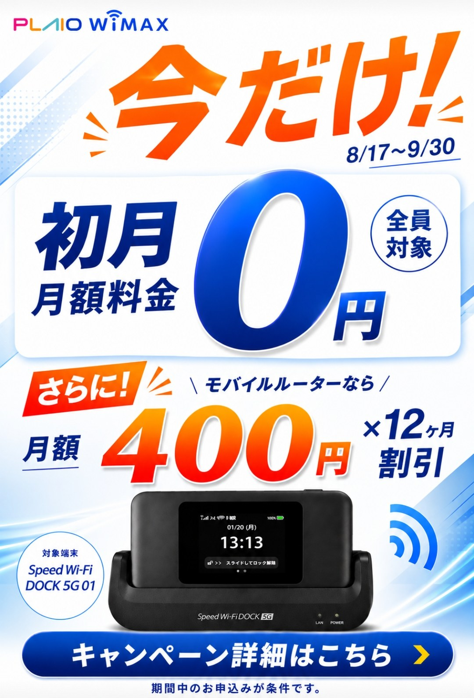
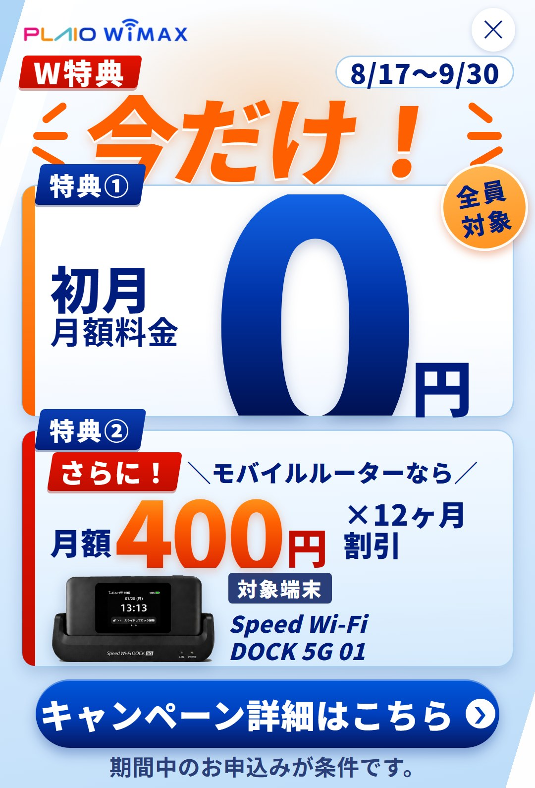
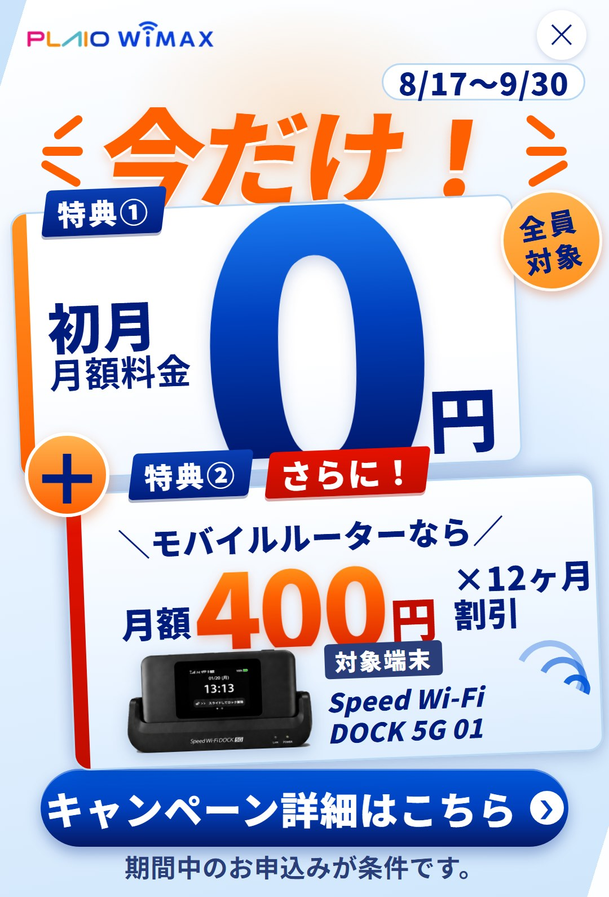
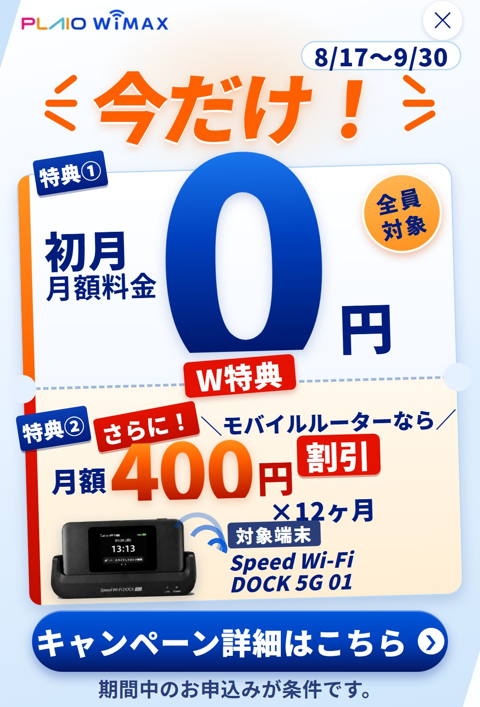

スマホ確認用。下のボタンで見比べられます。画像はピンチで拡大できます。
いまのバナー
熱はあるが、特典が2つあることが伝わらない。「初月0円」だけが白い箱に入り、「400円割引」は箱がないので、2つ目が“おまけの説明”に見えている。

元バナー
案C（定石）
「W特典」で総数を先に宣言し、同じ形のカード2枚に番号札を掛けた。元の熱（大きな0・オレンジ・斜めの勢い）はそのまま維持。
デザイン原則の検収では、この案が推し。

案C（両立・定石）
案D（革新）
2つの特典の境目に「＋」の丸を置き、特典が足し算で乗ることを記号で見せる。ぼかしても丸の形が残るので、読む前に「2つある」が伝わる。
顧客心理の判定では、この案が推し。

案D（両立・革新）
案E（顧客心理から作り直し）
1枚の割引券が、真ん中のミシン目と左右の切り込みで上下2区画に分かれている。「2つある」ではなく「2枚とも付いてくる1組」を券の形で言う構図。
ミシン目の上にまたがる「W特典」タブが、2区画をつなぐ結び目。
「割引」を「400円」の真横に移動したので、“月額が400円になる”という誤読が起きない（案C・案Dはここが弱点）。

案E（2枚綴りの割引券）
画像を2本指でひろげると拡大できます